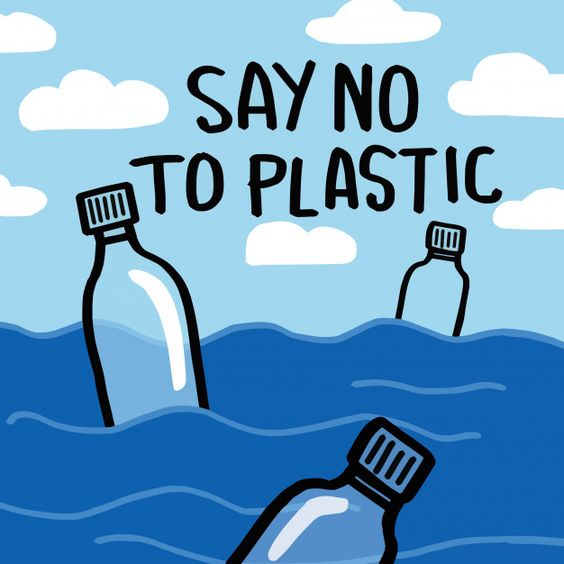
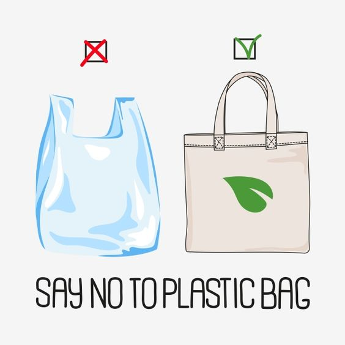
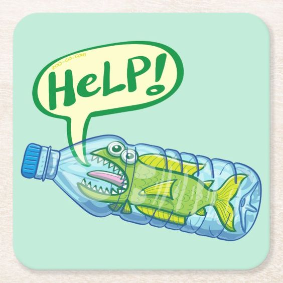
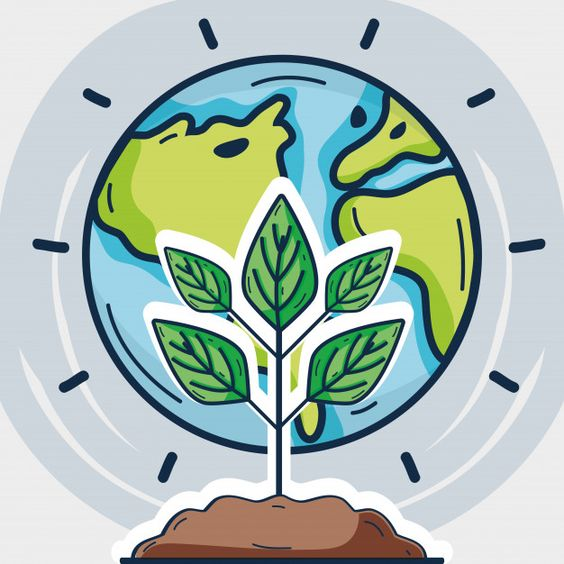
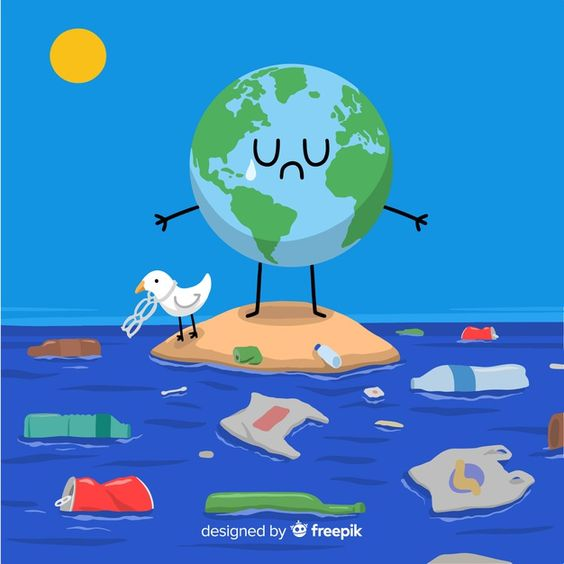

"Plástico" es el término habitual para describir una amplia gama de materiales sintéticos o semisintéticos que se utilizan para una inmensa cantidad de aplicaciones.
| Tipos de plásticos. | Características: |
| PET (Tereftalato de polietileno) | Tiene muchas propiedades, como su alta transparencia y la admisión de colorantes. Es resistente, ligero y reciclable con facilidad.Se usa en las botellas de agua o de bebidas. |
| HDPE (Polietileno de alta densidad) | El polietileno de alta densidad (PEAD) o HDPE es flexible, pero con cierta rigidez, y resiste impactos químicos y temperaturas además del agua. Por ese motivo se emplea en envases como botellas de leche, productos de limpieza o aceite para motores. |
| LDPE (Polietileno de baja densidad) | El polietileno de baja densidad o LDPE tiene una alta resistencia, tanto a los impactos como a los químicos al igual que el HDPE o PEAD. Es el material con el que se hace el papel film, el plástico de burbujas o las bolsas de la compra. |
| PVC (Policloruro de vinilo) | El policloruro de vinilo o PVC es el tipo de plástico más versátil, formado por la combinación de cloro y carbono. Está presente en las tarjetas de crédito, tuberías, revestimiento de cables, pieles sintéticas o algunos marcos de puertas y ventanas. |
| PP (Polipropileno) | El polipropileno o PP es un polímero termoplástico obtenido gracias a la polimerización del propileno. Es muy resistente y fácil de moldear. Se emplea en tapones de botellas, pajitas, fiambreras, neveras portátiles, fibras de tejidos y de alfombras, lonas y hasta pañales. |
| PS (Poliestireno) | Ees un polímero termoplástico obtenido gracias a la polimerización del estireno. No es fácil de reciclar. Se emplea para fabricar vasos térmicos, hueveras, bandejas de comida, relleno para embalaje, envases de yogur o aislantes. |
| Plástico mezcla | Cuando encontramos el número 7 en un producto plástico es porque se trata de una mezcla de varios materiales. Se pueden encontrar plásticos mezclado en productos como biberones, discos compactos, envases para uso médico o piezas de coches. |
Puedes encontar más información en esta página.
